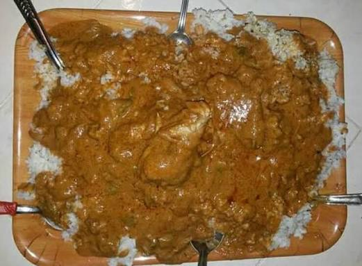
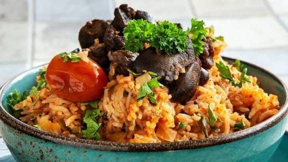
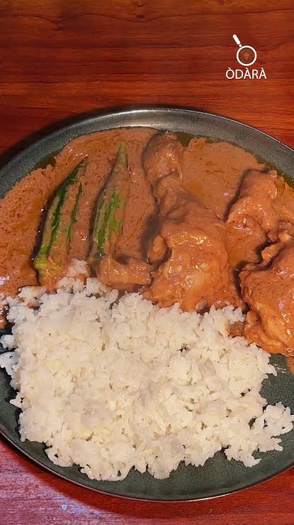
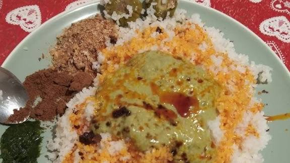
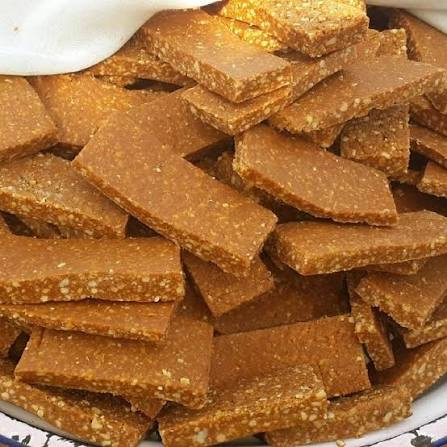

Siga
A gastronomia da Guiné-Bissau é cheia de sabor, tradição e carinho. É aquela comida que abraça, que reúne a familia e que faz lembrar casa. Os pratos são preparados com ingredientes naturais como,arroz, mandioca, peixe, carne, milho,amendoin e oleo de palma,tudo vindo da nossa terra.
Na mesa guineense nunca falta arroz aconpanhado de um bom molho,como o famoso caldo de mancarra ou o chabéu,são sabores fortes, mais feito com simplicidade e amor. Cada refeição é um momento de partilha, conversa e união.
Mais do que comida, a gastronomia guineense e cultura viva. Esta presente nas festas, nos casamentos, nas tabancas, e nos encontros familiares. É tradição que passa de mãe para filho,de geração para geração.
A pratos da Guiné-Bissau é um verdadeiro convite aos sentidos. São arromas intensos, cores vibrantes e sabores que abraçam coração. Cada prato é preparado com ingredientes frescos de nossa terra e do nosso mar, criando combinações irresistiveis.
Como por exemplo caldo de mancarra cremoso, rico e envolvente.
A comida guineense não é apenas saborosa-ela é quente, intensa e cheia de alma.
Basta sentir o arroma a boca começa a salivar.
A colinária da Guiné-Bissau é uma festival de sabores e arromas! Arroz fomegante, peixe fresco, amendoim cremoso e óleo de palma formam pratos cheio de cor e alma. Cada refeição é celebração, tradição e alegria -um verdadeiro abraço a nossa terra.

Caldo de Chabéu

Arroz de Jollof
Siga

Caldo de Mancarra

Fute

Doce de Mancarra